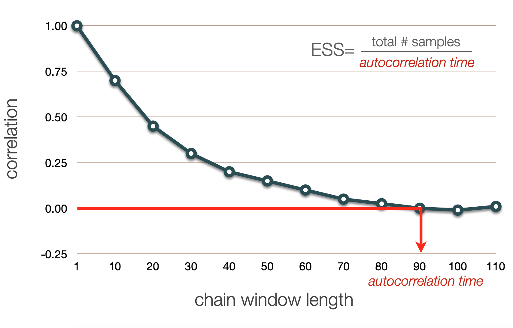

Bayesian Phylogenetics and Markov chain Monte Carlo
Barney Isaksen Potter
KU Leuven
2024-10-09
I0D53A: Evolutionary and quantitative genetics
Slides available online:

https://barneypotter24.github.io/talks/2024-10-09-mcmc-intro.html
Overview
Models of evolution

One Tree to rule them all, One Tree to find them, One Tree to bring them all and in the darkness bind them
- The (maximum likelihood) methods we've learned so far try to get a single tree
- The one they find is likely not the "best"
- Are we doing a good job of reporting a single tree?
Frequentist statistical framework
- Probabilities refer to the outcome of experiments (i.e. data)
- Probabilities are objectively real in the same way that physical objects are real
- "Likelihood" referes to the degree to which data support a hypothesis
Bayesian statistical framework
- BOTH data and model parameters are described by probabilities
- Probability represents the degree to which we believe a hypothesis
- Hypotheses can have probabilities in the absence of data
Bayesian inference
Fundamentals of Bayesian inference
- Bayesian inference produces a posterior probability distribution instead of a single MLE
- The posterior combines information from both data and prior knowledge
- Each parameter in the model has a prior probability distribution representing known knowledge about that parameter
Example: weak prior

"Human heights follow a uniform (flat) distribution between 1 angstrom and the width of the universe."
Example: informative prior

"Human heights follow a normal distribution with mean 170cm and standard deviation 5cm."
Example: informative prior

"Human heights follow a normal distribution with mean 170cm and standard deviation 5cm."
Example: informative prior

"Human heights follow a normal distribution with mean 170cm and standard deviation 5cm."
Bayes' Theorem
\[ P(H_1|\textbf{D}) = \frac{P(\textbf{D} |H_1) \times P(H_1 )}{P(\textbf{D})} \]How can observing data (D) change our belief in a hypothesis (H1)?
How can observing data (D) change our belief in a hypothesis (H1)?

How can we apply this framework to phylogenetic inference?

The posterior probability of a phylogenetic tree, $\tau$:
\[ P(\tau|\textbf{X}) = \frac{P(\textbf{X} |\tau) \times P(\tau )}{P(\textbf{X})} \]
$\tau = $ phylogenetic hyopthesis (tree)
$\textbf{X} =$ genomic sequence data
Likelihood calculation
\[ P(\tau|\textbf{X}) = \frac{\begingroup \color{teal} P(\textbf{X} |\tau) \endgroup \times P(\tau )}{P(\textbf{X})} \] \[ \begingroup \color{teal} L(\tau,\nu,\Theta | x_1 \mathellipsis x_N) \endgroup = \prod_{i=1}^N Pr(x_i | \begingroup \color{darkmagenta} \tau \endgroup , \begingroup \color{darkblue} \nu \endgroup , \begingroup \color{mediumseagreen} \Theta \endgroup) \]
$\begingroup \color{darkmagenta} \tau = \text{tree topology} \endgroup, \begingroup \color{darkblue} \nu = \text{branch lengths} \endgroup, \atop \begingroup \color{mediumseagreen} \Theta = \text{model parameters} \endgroup, i \in \text{sites in genome}$
Prior calculation
\[ P(\tau|\textbf{X}) = \frac{P(\textbf{X} |\tau) \times \begingroup \color{chocolate} P(\tau ) \endgroup}{P(\textbf{X})} \] \[ \begingroup \color{chocolate} P(\tau) \endgroup = \frac{1}{\begingroup \color{crimson} B(s) \endgroup} \]
$\begingroup \color{crimson} B(s) = \text{number of possible topologies} \endgroup$
Marginal term calculation
\[ P(\tau|\textbf{X}) = \frac{P(\textbf{X} |\tau) \times P(\tau )}{\begingroup \color{goldenrod} P(\textbf{X}) \endgroup} \] \[ \begingroup \color{goldenrod} P(\textbf{X}) \endgroup = \sum_{j=1}^{\begingroup \color{crimson} B(s) \endgroup} P(\textbf{X} | \tau_j) \times P(\tau_j) \]
To calculate this we need to sum the density across every possible tree...
... but tree topology space is too big!
\[\tiny \begin{array}{cc} \text{Num.~taxa} & \text{Num.~topologies:} \begingroup \color{crimson} B(s) \endgroup \\ \hline 1 & 1 \\ 2 & 1 \\ 3 & 3 \\ 4 & 15 \\ 5 & 105 \\ 6 & 945 \\ 7 & 10,395 \\ 8 & 135,135 \\ 9 & 2,027,025 \\ \vdots & \vdots \\ 20 & 8,200,794,532,637,891,559,375 \\ \vdots & \vdots \\ 769 & 3.753 \times 10^{2,110} \\ \end{array} \]Markov chain Monte Carlo (MCMC)
Markov chain Monte Carlo (MCMC) Sampling
Posterior probabilities are difficult to calculate analytically. However, we can sample values from the posterior distribution with a frequency proportional to thir posterior probability by using MCMC.
Recall: ML optimization

MCMC leverages randomness

Operators

Tuning and mixing
Operators on trees
MCMC diagnostics, summaries, and interpretation
(after a 5 minute break)
Downsampling
Stationarity
Convergence in multiple chains
Effective sample size
Autocorrelation within a chain
ESS Calculation
How do we summarize and interpret the results of our Bayesian phylogenetic analysis?
Summary of continuous parameters
Posterior distribution
Credible intervals
Credible intervals


How do we choose a consensus?
Maximum clade credibility (MCC) trees
MCC calculation
My chain won't converge and I am confused and angry and a little bit scared. What can I do?
DON'T PANIC
Some things might help:
- Wait; run more parallel chains (different seeds)
- Retune parameters (target $10 \text{--} 70\%$ acceptance)
- Propose changes to "difficult" parameters more often (operator weights)
- Use different operators
- Simplify or make the model more realistic (stronger priors)
Next time: Bayesian phylogenetics in practice